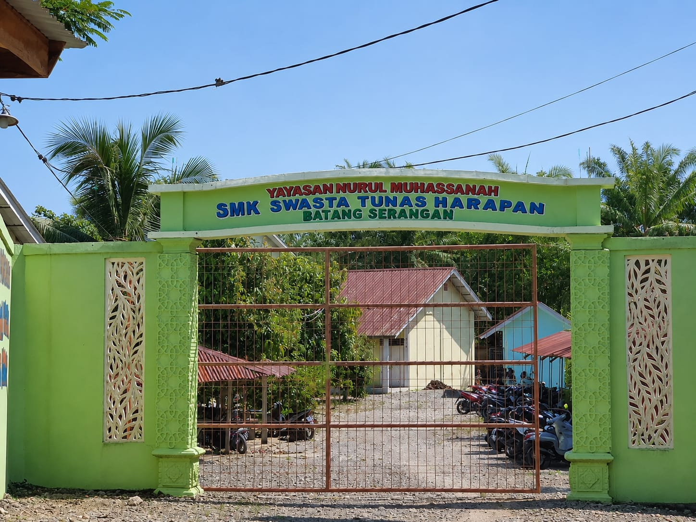

SMK SWASTA TUNAS HARAPAN adalah sekolah menengah kejuruan yang berada di bawah naungan Yayasan Nurul Muhassanah Batang Serangan. Sekolah ini didirikan pada tahun 2014 dengan tujuan memberikan pendidikan kejuruan yang berkualitas serta mencetak lulusan yang memiliki keterampilan, berakhlak mulia, dan siap menghadapi dunia kerja maupun dunia usaha.
SMK SWASTA TUNAS HARAPAN merupakan salah satu sekolah menengah kejuruan yang berada di Kecamatan Batang Serangan, Kabupaten Langkat, Sumatera Utara. Sejak didirikan, sekolah ini terus berkembang menjadi salah satu SMK yang dipercaya masyarakat karena memiliki komitmen dalam memberikan pendidikan yang berkualitas serta membentuk peserta didik yang berkarakter, disiplin, dan siap menghadapi dunia kerja maupun melanjutkan pendidikan ke jenjang yang lebih tinggi.
SMK SWASTA TUNAS HARAPAN dikenal sebagai salah satu SMK terbaik dan menjadi sekolah kejuruan pertama yang berkembang di Kecamatan Batang Serangan. Dengan dukungan tenaga pendidik yang profesional serta fasilitas pembelajaran yang memadai, sekolah ini terus berupaya meningkatkan mutu pendidikan agar mampu menghasilkan lulusan yang kompeten, kreatif, dan memiliki daya saing di dunia industri maupun dunia usaha.
Saat ini SMK SWASTA TUNAS HARAPAN memiliki dua gedung yang digunakan sebagai sarana kegiatan belajar mengajar. Tersedia berbagai ruang kelas, laboratorium praktik, bengkel, perpustakaan, serta fasilitas penunjang lainnya yang mendukung proses pembelajaran agar berjalan secara efektif dan nyaman bagi seluruh peserta didik.
SMK SWASTA TUNAS HARAPAN membuka tiga program keahlian, yaitu Manajemen Perkantoran (MP), Teknik Komputer dan Jaringan (TKJ), dan Teknik Sepeda Motor (TSM). Ketiga program keahlian tersebut dirancang untuk membekali peserta didik dengan kompetensi sesuai kebutuhan dunia kerja dan perkembangan teknologi saat ini.
Saat ini SMK SWASTA TUNAS HARAPAN dipimpin oleh Bapak Agusnianto, S.Pd sebagai Kepala Sekolah. Di bawah kepemimpinannya, sekolah terus melakukan berbagai inovasi dalam meningkatkan kualitas pendidikan, memperkuat kerja sama dengan dunia usaha dan dunia industri, serta menciptakan lingkungan belajar yang nyaman, disiplin, dan berprestasi. Dengan semangat kebersamaan, SMK SWASTA TUNAS HARAPAN berkomitmen untuk terus menjadi sekolah kejuruan yang unggul dan mampu mencetak generasi muda yang siap bersaing di masa depan.
Dengan dukungan seluruh pengurus yayasan, tenaga pendidik, tenaga kependidikan, serta masyarakat, SMK SWASTA TUNAS HARAPAN terus berkomitmen menjadi lembaga pendidikan yang mampu menghasilkan lulusan yang unggul dalam ilmu pengetahuan, teknologi, berakhlakul karimah, serta siap mengisi dunia industri, dunia usaha, maupun melanjutkan pendidikan ke jenjang yang lebih tinggi.